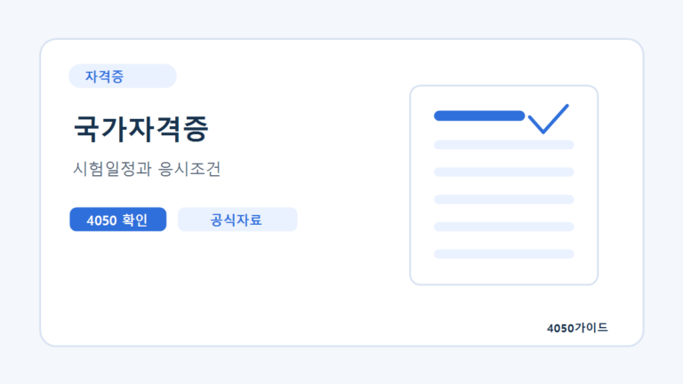
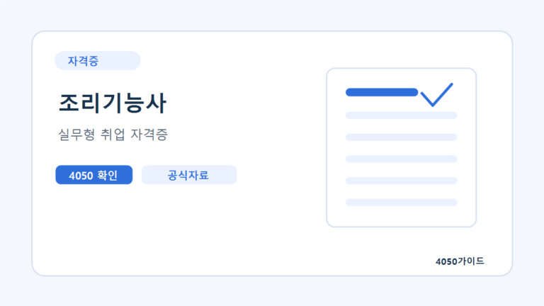
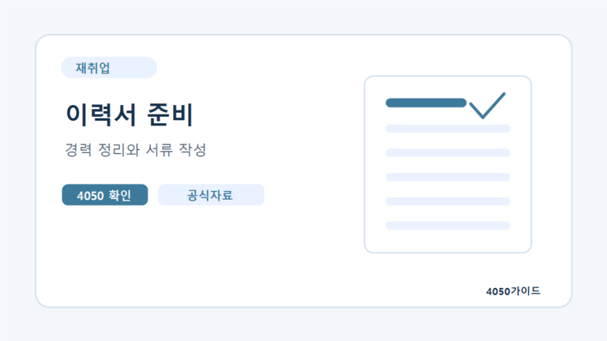
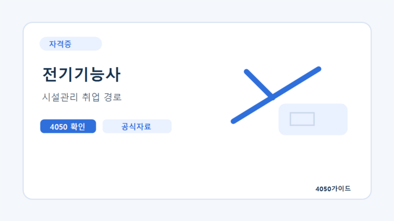
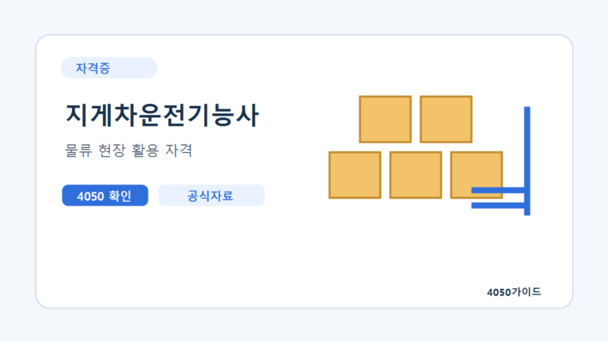

자격증
사회복지사 2급 실습 전 확인할 것: 4050 준비자가 자주 놓치는 기준
사회복지사 2급은 학점은행제와 함께 많이 준비하지만, 실습 조건을 뒤늦게 확인해 일정이 꼬이는 경우가 있습니다. 이수...
자세히 보기취득 난이도보다 실제 일자리, 근무 강도, 국비지원 가능성, 공식 시험 정보를 함께 봅니다.

사회복지사 2급은 학점은행제와 함께 많이 준비하지만, 실습 조건을 뒤늦게 확인해 일정이 꼬이는 경우가 있습니다. 이수...
자세히 보기
조리기능사는 50대 이후 재취업 후보로 자주 언급됩니다. 학교 급식, 병원, 요양시설, 회사 구내식당 등에서 조리...
자세히 보기
산림과 조경 분야는 실외 활동을 선호하는 4050 세대가 관심을 갖는 분야입니다. 조경기능사, 산림기능사 등은 공원,...
자세히 보기50대 이후 자격증은 취득 난이도보다 실제 일자리와 연결되는지가 중요합니다. 국민내일배움카드 과정도 단순 인기보다 지역 채용...
자세히 보기
시설관리 분야는 4050 재취업에서 자주 거론되지만, 자격증마다 역할과 난이도가 다릅니다. 전기, 소방, 에너지, 가스 분야를...
자세히 보기사회복지사 2급을 4050 세대가 준비할 때 학점은행제, 실습, 취업 활용처를 확인하는 방법입니다.
자세히 보기
전기기능사 자격증을 50대 이후 준비할 때 시험, 실기, 취업 활용 분야를 현실적으로 정리했습니다.
자세히 보기50대 여성 재취업 자격증은 단순히 취득이 쉬운 것보다 실제 일자리와 연결되는지를 먼저 봐야 합니다. 요양,...
자세히 보기요양보호사 자격증을 준비할 때 교육, 실습, 시험, 취업 현실까지 4050 기준으로 정리했습니다.
자세히 보기